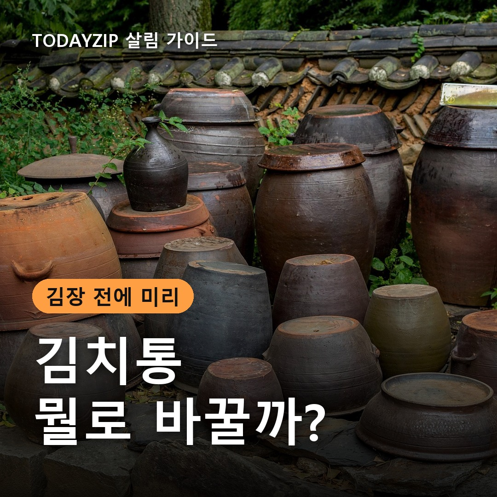
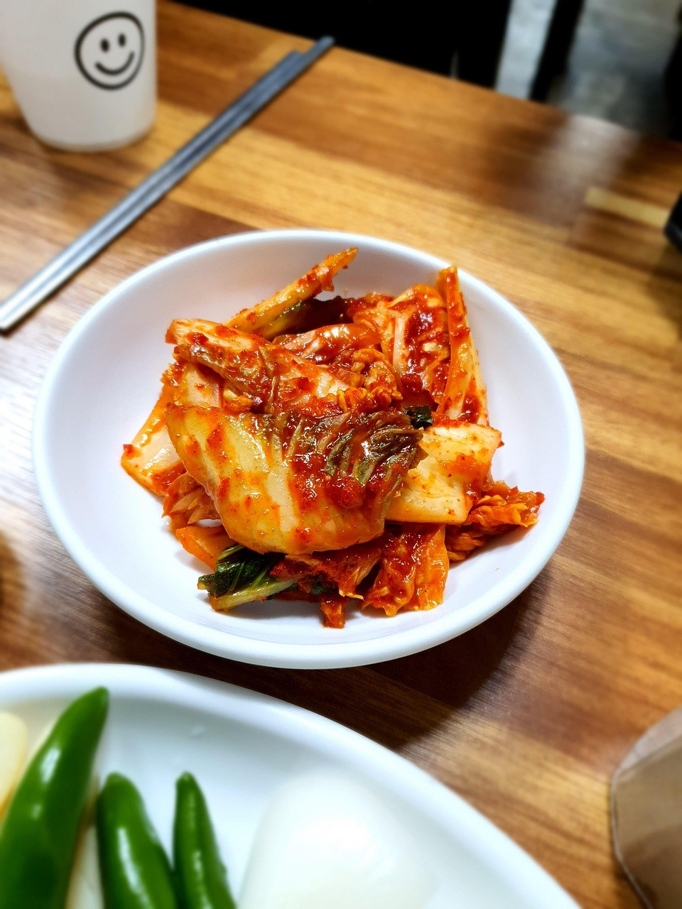
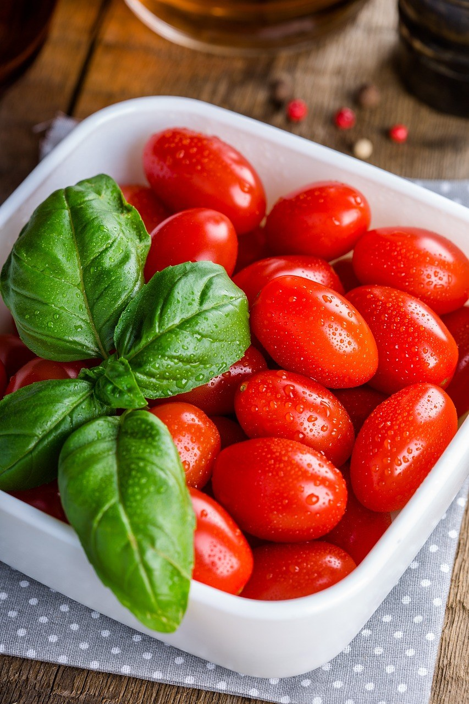
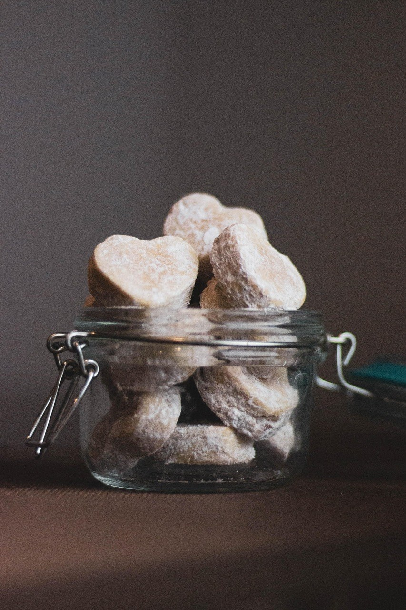
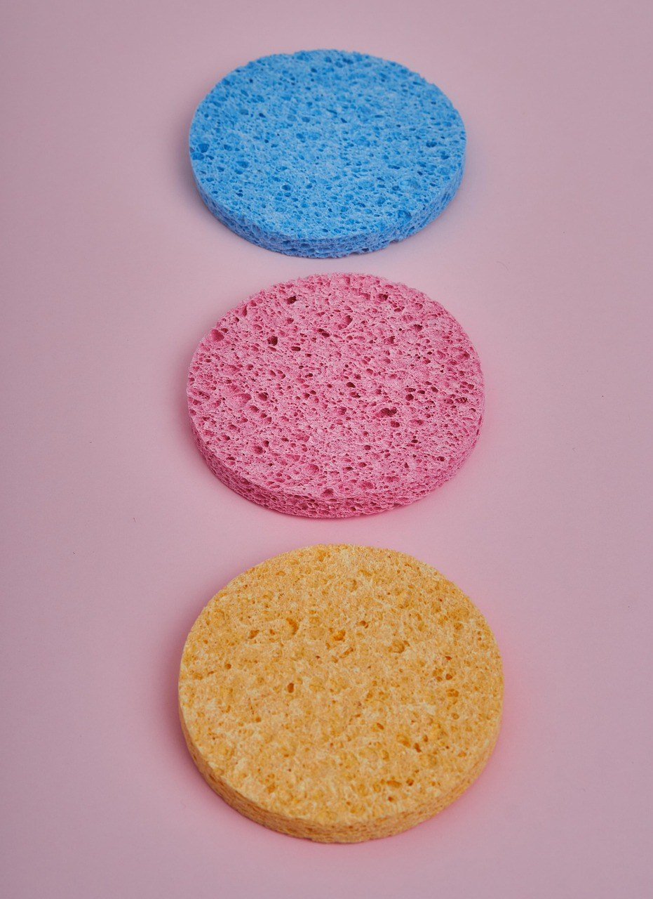

[사진 1: 썸네일]
김장철이 다가오면 냉장고 속 김치통부터 꺼내 보게 되죠. 빨갛게 물들고 냄새가 배어 씻어도 개운하지 않은 통을 보면 이번엔 바꿔야 하나 고민돼요. 막상 사려고 보면 플라스틱, 스테인리스, 유리까지 종류가 많아 헷갈리고요.
김치통 고르는 법의 핵심은 '재질·밀폐·크기' 세 가지예요. 오늘은 재질별 차이를 표로 비교하고, 김장 전에 확인할 체크리스트와 냄새 덜 배게 쓰는 법까지 정리해 드릴게요.
[사진 2]
김치는 마늘·젓갈 같은 향이 강한 재료에 고춧가루 색소, 발효하면서 생기는 산 성분까지 들어 있어요. 그래서 오래 담아 두면 통 표면에 냄새와 붉은 물이 남기 쉬워요.
특히 플라스틱은 쓰다 보면 생기는 미세한 흠집에 국물 성분이 스며들 수 있어요. 어떤 재질은 냄새에 강하고, 어떤 재질은 가볍고 저렴한 식으로 장단점이 갈리니 쓰는 습관에 맞춰 고르는 게 좋아요.
아래는 일반적인 특징이에요. 같은 재질이라도 두께와 뚜껑 구조에 따라 차이가 있으니 기준으로만 참고하세요.
| 구분 | 플라스틱(PP·트라이탄) | 스테인리스 | 유리 |
|---|---|---|---|
| 냄새·색 배임 | 배기 쉬움(흠집 생기면 더) | 적은 편, 국물색이 남기도 | 가장 적은 편 |
| 무게 | 가벼움 | 중간 | 무거움 |
| 속 보임 | 보임(반투명·투명) | 안 보임 | 잘 보임 |
| 깨짐·변형 | 안 깨지나 변형·흠집 | 찌그러질 수 있음 | 떨어뜨리면 깨짐 |
| 가격대 | 저렴한 편 | 비싼 편 | 중간~비싼 편 |
| 잘 맞는 곳 | 대용량 김장, 김치냉장고 | 오래 두는 묵은지 | 소분해서 먹는 냉장고용 |
[사진 3]
김치는 발효하면서 가스와 국물이 생겨서, 뚜껑이 약하면 냉장고 안에 냄새가 퍼지고 국물이 새요. 장바구니에 담기 전에 아래 항목을 확인하세요.
[사진 4]
큰 통 하나에 다 담아 두면 꺼낼 때마다 김치 전체가 공기에 닿아요. 김장 김치는 큰 통에 보관하고, 일주일쯤 먹을 양만 작은 통에 덜어 쓰면 맛이 덜 변하고 냄새도 덜 퍼져요.
그래서 김치통 고르는 법을 정할 때는 '큰 통 1~2개 + 작은 통 몇 개'처럼 묶어서 생각하면 좋아요. 큰 통은 가벼운 플라스틱, 작은 통은 냄새가 덜 배는 유리처럼 섞어 써도 돼요.
[사진 5]
김치는 발효하며 부피가 늘고 국물이 올라오니 통에 가득 채우지 말고 여유를 두세요. 꾹 눌러 담고 위를 위생 비닐이나 누름판으로 덮으면 공기 닿는 면이 줄어요.
다 먹은 통은 바로 씻는 게 가장 좋아요. 플라스틱은 거친 수세미로 문지르면 흠집이 생겨 오히려 냄새가 더 배니 부드러운 스펀지를 쓰고, 패킹은 분리해서 씻은 뒤 완전히 말려서 끼우세요.
Q. 이미 냄새 밴 플라스틱 통은 계속 써도 되나요?
A. 냄새가 배어도 깨끗이 씻었다면 김치 전용으로 쓰는 경우가 많아요. 다만 흠집이 많거나 뿌옇게 변형됐다면 바꾸는 게 좋아요.
Q. 김치냉장고 기본 통이 부족하면 아무 통이나 넣어도 되나요?
A. 모델마다 칸 크기가 달라서 높이가 안 맞으면 뚜껑이 눌려요. 칸 안쪽 치수를 재고 그보다 조금 작은 통을 고르세요.
정리하면, 대용량 김장은 가벼운 플라스틱, 오래 두는 묵은지는 스테인리스, 덜어 먹는 소분용은 유리예요. 어떤 재질이든 뚜껑 밀폐와 크기를 먼저 보는 게 김치통 고르는 법의 핵심이에요.
여러분은 김치통 냄새를 어떻게 관리하고 계신가요? 김장 준비 팁이 있다면 댓글로 나눠 주세요.
인스타그램 @todayzip.info 에서 살림 꿀팁을 30초 영상으로도 볼 수 있어요.